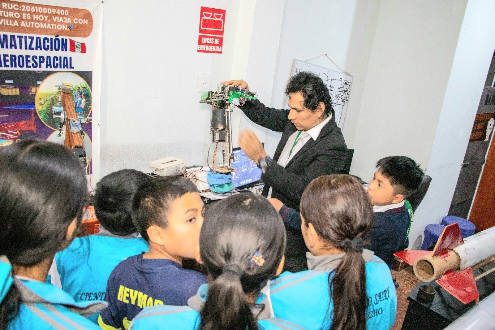
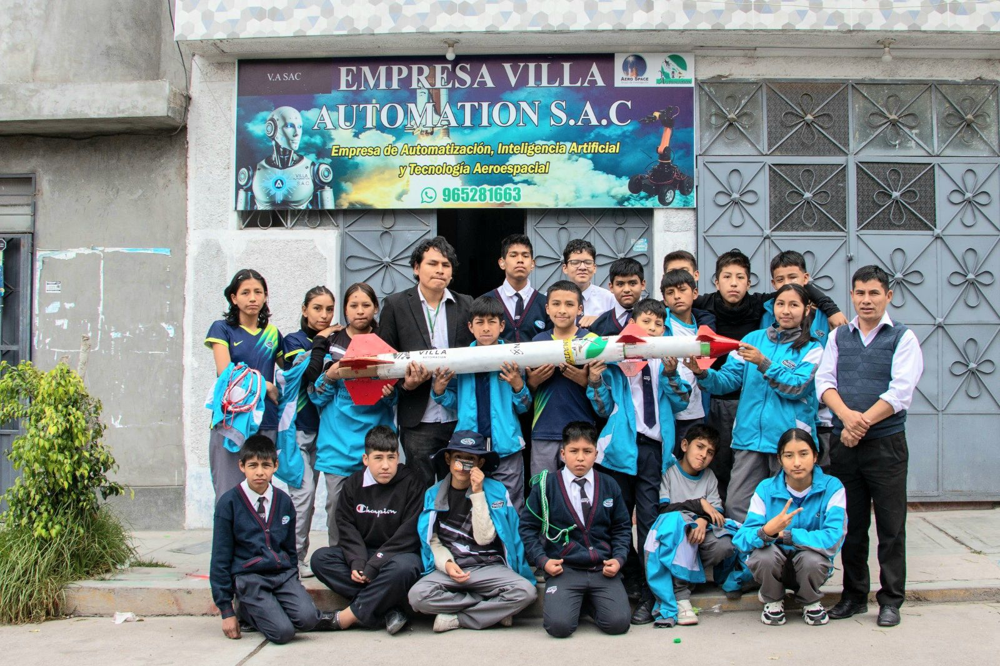
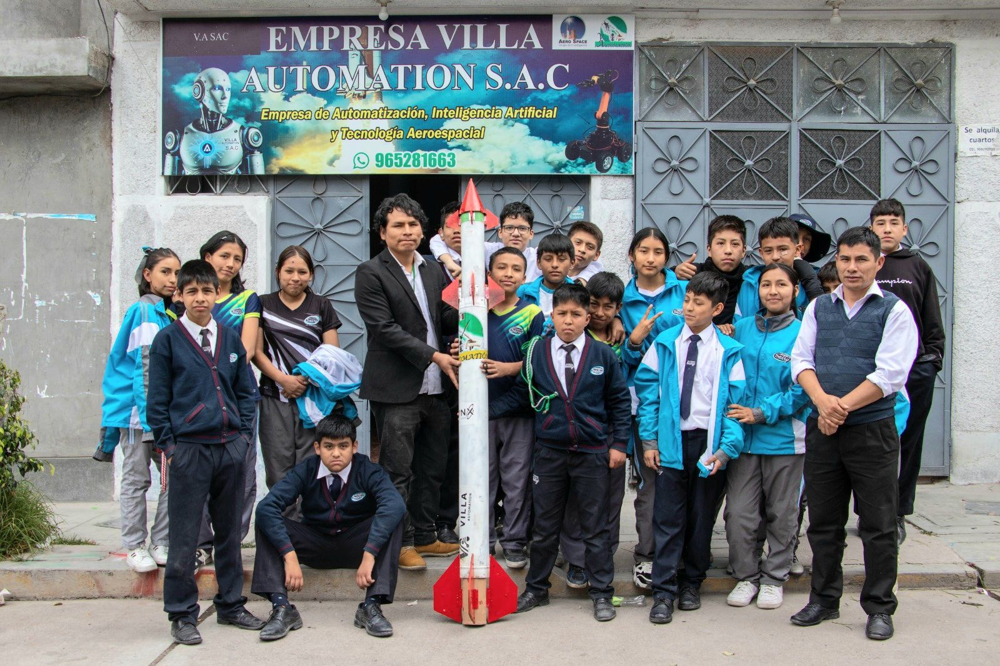
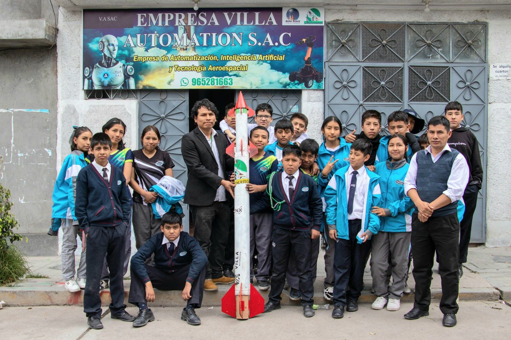

Eventos y Actividades Tecnológicas de Villa Automation SAC
JORNADA INTERNACIONAL DE CIENCIAS AVANZADAS ASTRODINÁMICA Y TELEDETECCIÓN -JICAAT
JICAAT
La Jornada Internacional de Ciencias Avanzadas (JICAAT) es un evento académico–científico de alcance internacional orientado a la difusión del conocimiento científico avanzado, la innovación tecnológica y la investigación aplicada.
Reúne a investigadores, profesionales, docentes y estudiantes con el objetivo de impulsar el desarrollo científico y tecnológico mediante ponencias especializadas, proyectos de investigación y desarrollos multidisciplinarios.
- Ingeniería y tecnologías avanzadas
- Robótica, automatización e inteligencia artificial
- Ciencias aeroespaciales y simulación científica
- Investigación aplicada y desarrollo experimental

Demostración de Robótica – Universidad Nacional Autónoma de Huanta
En octubre de 2025, Villa Automation presentó su proyecto de robótica y automatización avanzada en la Universidad Nacional Autónoma de Huanta, mostrando robots colaborativos y sistemas aplicados a agricultura, industria y defensa. La actividad incluyó talleres prácticos y demostraciones directas con estudiantes.


I Torneo Nacional de Robots WarBots Automation (RWA) – 2025
Organizado junto a YLEM Perú, el primer torneo nacional de robots de combate se realizará en junio del 2025 en la Facultad de FISMA – UNSCH. Incluye medallas, diplomas, kits de robótica, becas y premios especiales para los ganadores. Un evento histórico para la robótica competitiva en Ayacucho.


Feria Científica y Tecnológica – UNSCH
Participamos en las ferias científicas 2023, 2024 y 2025 mostrando robots todoterreno, sistemas de automatización industrial, drones, vehículos no tripulados y controladores ambientales inteligentes desarrollados por nuestra empresa.


Congreso Iberoamericano CONESLAT – Ponencia del Director
Nuestro director presentó los desarrollos de Villa Automation en robótica colaborativa para defensa, tecnología aeroespacial, y los proyectos de cohetes JICAAT. Esta exposición resaltó el liderazgo tecnológico de Ayacucho a nivel iberoamericano.


Evento de Ciencia y Tecnología – Ejército del Perú
Presentamos el robot colaborativo táctico con visión artificial y orugas para reconocimiento y apoyo estratégico. Recibimos reconocimiento por nuestro aporte al desarrollo tecnológico para el sector defensa.


Feria tecnologica -Colegio Amautic
Villa Automation participó en la Feria Tecnológica del Colegio Amautic presentando demostraciones en vivo de brazos robóticos, controladores educativos y sistemas de automatización. Los estudiantes interactuaron directamente con nuestros prototipos y aprendieron sobre robótica aplicada, ayudando a impulsar su interés por la ciencia y la ingeniería.


Jornadas de Robótica, Investigación y Automatización – Ayacucho
Cada año realizamos talleres, convivencias tecnológicas, charlas y demostraciones en colegios, institutos y universidades. Las actividades incluyen programación, robótica educativa, IA aplicada, automatización y proyectos prácticos interactivos.
Demostracíón de Productos Tecnologicos en el Colegio Sayri – Ayacucho
realizamos una presentación especial de nuestros robots colaborativos de defensa y automatización y tecnologia Aeroespacial, donde alumnos y docentes pudieron interactuar con nuestras tecnologías de última generación. Los visitantes conocieron de cerca cómo funcionan nuestros sistemas robóticos aplicados a educación, industria y seguridad. ¡Una experiencia que inspira a las futuras generaciones!.
  
